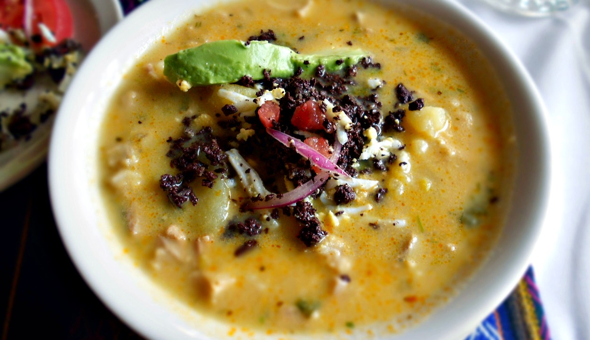

“El hornado es una cosa increíblemente maravillosa” es uno de los platos típicos más destacados en la gastronomía quiteña.
El hornado es un plato tradicional ecuatoriano de cerdo asado lentamente en horno de leña hasta que la piel queda crujiente y la carne tierna. Se acompaña con guarniciones como tortillas de papa, mote, ensalada agridulce y el aderezo llamado "agrio".
El yaguarlocro
El yaguarlocro es una sopa tradicional y emblemática de la sierra ecuatoriana, específicamente de Quito, que se elabora a base de papas, menudo de borrego (tripas, panza e hígado) y sangre de borrego, de ahí su nombre "yaguar" (sangre).

Tradicionalmente se sirve caliente, acompañado de guarniciones que se añaden al gusto: aguacate en rodajas, cebolla paiteña cruda y un refrito de la sangre del borrego.
El llapingacho
El llapingacho es un plato típico ecuatoriano originario de la región andina, consistente en tortillas de papa rellenas de queso y fritas hasta dorarse.
Su color característico se debe al achiote en su preparación, y se puede acompañar de diversos elementos como chorizo, huevo frito, curtido de cebolla o ensalada.